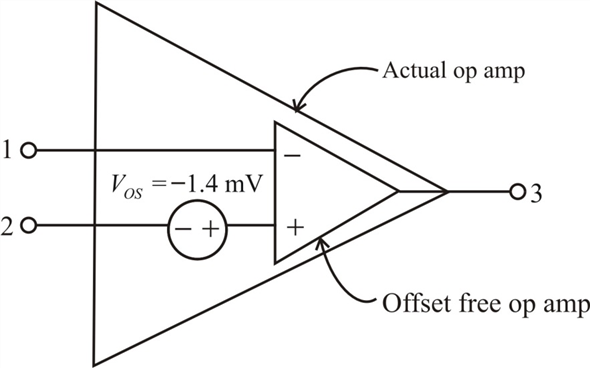

Calculate the input offset voltage,  :
:
Substitute for  and
and  for
for  in the equation.
in the equation.
Therefore, the input offset voltage,  is
is  .
.
Calculate the input offset voltage, :
Substitute for and for in the equation.
Therefore, the input offset voltage, is .
The following is the circuit model of an op-amp with input offset voltage,  .
.
